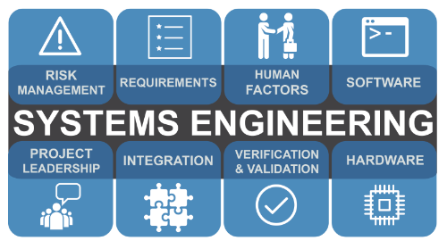

Hello
My name is Henry. I am a systems engineer with 20 years of experience. I have developed system models using languages SysML and UML for both hardware and software systems. I have designed automated solutions to improve team efficiencies using SQL, VB, VBA, and C#. Now I am working on new skills to become a full stack web developer.
My Skills

Web Development
I can take a system through the full life cycle using either traditional waterfall or the agile methods. I can translate stakeholder and end user requirements into testable system components. I am proficient in both SysML and UML to document and convey the system under design providing requirements traceability and system design aspects to stakeholders and downstream engineers.

Graphics Design
I have developed several in house programs to improve efficiencies in the team’s engineering processes. I have used C#, SQL, VB, and VBA languages to accomplish these efficiencies. I have developed both Access and Microsoft SQL databases to both store and generate configuration information to automate installation / configuration activities. I pride myself on understanding the current engineering approach and minimizing impact to the engineering teams while automating tasks leveraging existing tools like Microsoft Excel.

Full Stack Web Developer UX/UI Design
I am currently working through a bootcamp for full stack Web Design to include UX/UI design work. I am excited to get into web development and challenge my current UX/UI capabilities. I will be ready to start supporting frontend web development jobs in the next couple of weeks while I continue my bootcamp to round out the backend design work.